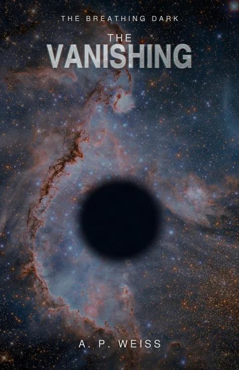
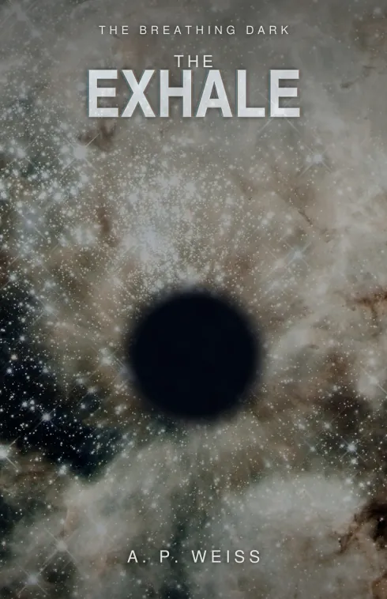
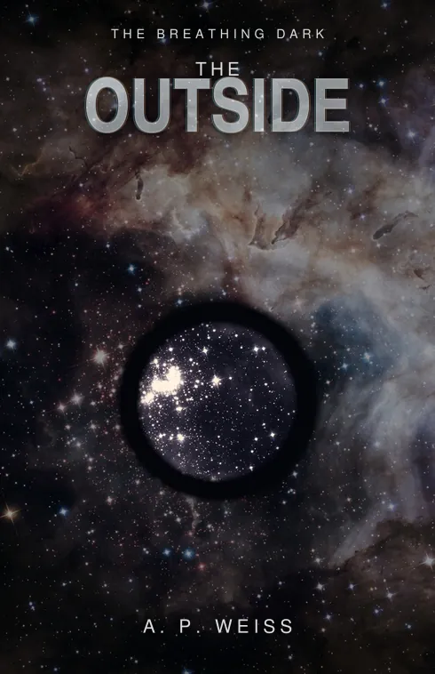

Book one · 377 pages
The Vanishing
“I sold the sky for a boat.”
Deneb fades before a hemisphere’s held breath. One ship goes to learn why: a one-way, twenty-year ride into the dark.
Literary hard science fiction
The dark was never empty. It was breathing.
The stars are going out. One by one. No explosions. No remnants.
Only the weightless go out.
Every star humanity ever weighed still burns.
The universe isn’t expanding. It’s breathing in. And it just started to breathe out.

Book one · 377 pages
“I sold the sky for a boat.”
Deneb fades before a hemisphere’s held breath. One ship goes to learn why: a one-way, twenty-year ride into the dark.

Book two · 363 pages
The expansion of the universe has stopped.
And reversed. Blueshift rises like a tide. Run, stand, or ride.

Book three · 347 pages
Every vanished star was pointing at the same place.
The answer is larger than any question humanity knew to ask.
Six editions of every book
E-book, paperback, hardcover. Audiobook, immersive audiobook with score and sound design, full-cast audio drama.
Shelved beside
The author2026
A. P. Weiss
Literary science fiction where the arithmetic is real and the grief is kept as carefully as the data.
Start with Book One
See the book at Orb & InkThe VanishingBook two
See the book at Orb & InkThe ExhaleBook three
See the book at Orb & InkThe OutsideSix editions of each, on the way.